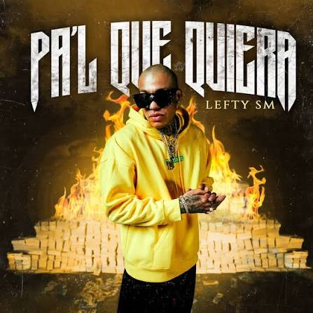
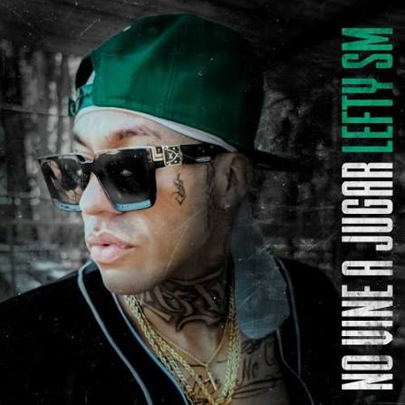
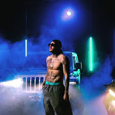

| foto | cancion | letra | video | |
|---|---|---|---|---|
 |
volando | Otra vez ando volando Traigo una pinche loquera Y es que así salió el muchacho No me importa quién me quiera Porque pura madre cambio Porque pura madre cambio Traigo el estilo más puto pesado Soy de Sonora, del Río Colorado Seis, cinco, tres, represento mi estado Yo pura verga, me quedo callado Tengo to'a mi clica que me hace el paro Vato, no la cague porque sale caro No me mire feo, no me mire raro Que no me interesa su pinche descaro Ya está caliente, machín, allá afuera Puro pendejo deseando que muera Pero pura madre bajo bandera Yo me cargo una puta traquetera No me diga aquí no hay otra manera Solo con los míos circulo la cera Revienta mi cora', siento que se me acelera Mantente calla'o, calla'o, espera Mucho traicionero me ha llamado amigo Creen que me la creo, yo nomás me río Yo sé lo que traman, me pego suspiro Quisiera pegarles en la frente un tiro Pero na', na', na', na', na', na', na' Pero na', na', na', na', na' Otra vez ando volando Traigo una pinche loquera Y es que así salió el muchacho No me importa quién me quiera Porque pura madre cambio Porque pura madre cambio Muchos me dicen que soy bien grosero Que canto pura tontería La neta me vale macizo que vergas critican, si esto es cosa mía Que si ando quemando María Que si mi alma ya vendería Que si gané la lotería Parece que son policías Todo tranquilo por el terreno Me voy calmado, todo sereno Soy mexicano de orgullo de moreno Me marcan al phone, que quieren lo bueno Yo me traigo el feeling, contagiando llega Todo bien rayado, chamaco que peca Me faltan tornillos, me faltan tuercas Hazme mala cara, te mando a la verga Y es que así soy, no se porte culero Ya me cansé, dame to' tu dinero Ya les llovió, les calló el mero, mero Tape goteras, traigo un aguacero No ponga pero, parece pendejo Hace un chingo que yo ya no me dejo Siempre pa' delante Nunca pasos de cangrejo Otra vez ando volando Traigo una pinché loquera Y es que así salió el muchacho No me importa quién me quiera Porque pura madre cambio Porque pura madre cambio Otra vez ando volando Traigo una pinché loquera Y es que así salió el muchacho No me importa quién me quiera Porque pura madre cambio Porque pura madre cambio (eyo', eyo', eyo', eyo') Ha-ha Dímelo, Tony AGW Beats, ha Es el Lefty, papá La chispasiva está en la casa, ha San Luis, Sonora México, yeh | video | |
 |
ahogandome en alcohol | Ven y llena este vacío Y llévate el dolor Que quiero sentir que vivo Ahogándome en alcohol Ay, ay, ay llena el vacío Que ya no puedo más Me tienes bien confundido Ocupo tu calor Ven y llena este vacío Y llévate el dolor Que quiero sentir que vivo Ahogándome en alcohol Ay, ay, ay llena el vacío Que ya no puedo más Me tienes bien confundido Ocupo tu calor Ocupo el calor que me dabas No es justo que tú ya no sientas nada Si tú decías que tanto me querías Y ahora me dejas solo Dime por qué tú me mentías Nada sentías, no lo perdono, me va a doler Voy a tratar de tomarme el dolor Voy a sacarte de mi corazón Me dueles tanto que no te imaginas La daga en el pecho que me cargo hoy Sufro por culpa de mi mala suerte Como me duele no poder tenerte No poder verte, quiero abrazarte Pero qué lindo fue conocerte Ando sufriendo porque no te veo No sé qué cargo que me siento reo Andaba arriba, caí, pero feo Ya no me escribes, ya no te leo Ya no le tomo sentido a la vida Desde que no estás, no dejo la bebida Ando dolido desde tu partida Como chingados se cierra esta herida Ven y llena este vacío Y llévate el dolor Que quiero sentir que vivo Ahogándome en alcohol Ay, ay, ay llena el vacío Que ya no puedo más Me tienes bien confundido Ocupo tu calor Ven y llena este vacío Y llévate el dolor Que quiero sentir que vivo Ahogándome en alcohol Ay, ay, ay llena el vacío Que ya no puedo más Me tienes bien confundido Ocupo tu calor Desde que ya no estás, me siento solo Me dejaste con el corazón roto Ya no te escribo, cómo te extraño Quiero, mi niña, volver a tu lado Ahora que fumo me siento algo raro Extraño tus besos, también tus regaños Quiero que sepas que hace unos días Me encontraba perdido en la bebida En una cantina miré a tus amigas Le' pregunté que si cómo seguías No contestaron, ellas se burlaron Será difícil volver al pasado Ahora soy otro, ahora he cambiado Me la llevo arrebatao' a todos lados Quiero que sepa que no te he olvidado, ¡ey! No te he olvidado Ven y llena este vacío Y llévate el dolor Que quiero sentir que vivo Ahogándome en alcohol Ay, ay, ay llena el vacío Que ya no puedo más Me tienes bien confundido Ocupo tu calor Ven y llena este vacío Y llévate el dolor Que quiero sentir que vivo Ahogándome en alcohol Ay, ay, ay llena el vacío Que ya no puedo más Me tienes bien confundido Ocupo tu calor | video | |
| que bonita | Qué bonita muchachita Besos de los tuyos, mi corazón necesita Como la primera cita Voy a tratarla pa' que esto se repita, ey Qué bonita muchachita Besos de los tuyos, mi corazón necesita Como la primera cita Voy a tratarla pa' que esto se repita Voy contigo por el mundo entero Por ti, juro que me muero Me quieres como yo te quiero Por verte, yo me desespero Me haces ver de una manera distinta Contigo, mi vida es linda Mi cielo era gris Y con tus besos lo pintas De mil colores lo pintas Y ahora siento que puedo ser feliz Desde que te conocí La vida vale y la quiero vivir Pero si es contigo Abrázame, que eres mi abrigo Eres fuego pa' este frío Mira que siempre te digo Qué bonita muchachita Besos de los tuyos, mi corazón necesita Como la primera cita Voy a tratarla pa' que esto se repita, ey Qué bonita muchachita Besos de los tuyos, mi corazón necesita Como la primera cita Voy a tratarla pa' que esto se repita (oye) ¿Cómo olvidar cómo fue Cuando te vi por primera vez? Me sentía muy poco pa' usted ¿Recuerdas de que me cuajé? Eres más de lo que imaginé La vida no vale nada si tú no estás Y tú lo sabes bien Que, cuando estamos juntos, el tiempo rápido va Y yo no sé por qué Si eres la niña más bonita que han mirado mis ojos Yo lloro si no estás No me pregunte por qué yo los traigo rojos Si rápido te vas Y ahora solo me queda decirte Que yo no puedo más Y ahora que escuchaste, si tú quieres irte Lo volvería a intentar Qué bonita muchachita Besos de los tuyos, mi corazón necesita Como la primera cita Voy a tratarla pa' que esto se repita, ey Qué bonita muchachita Besos de los tuyos, mi corazón necesita Como la primera cita Voy a tratarla pa' que esto se repita Oye, Tony La shit masiva está en la casa, cabrones San Luis, Sonora Qué bonita muchachita Es el Lefty, papá | video | ||
 |
muero. | (Papá, ¿le puedes decir a mi mamá) (Si me puedo quitar mis trenzas?) (¿Viste la foto que te mandé?) Muero A veces siento que me muero No puedo seguir, pero quiero Tenerte conmigo un momento para abrazarte Porque yo me muero Cada que te vas, yo me muero Me faltas, siento que te quiero Me haces sentir mil mariposas, qué raro me siento Porque yo me muero Cada que te vas de mi lado Me siento de más agüitado Me siento raro, que no sé lo que me está pasando Eres lo que yo más quiero en mi mundo Te pienso y a cada segundo Me duele el corazón porque no te tengo conmigo Una habitación oscura queda cada que te vas Mis ojos tristes, también ganas de llorar Es tan difícil, ya no lo puedo ocultar Vuelve, vuelve, vuelve Vuelve conmigo, anda y después te vas Dame un abrazo, que ya no puedo esperar Me estoy muriendo solo de tanto pensar Muero A veces siento que me muero No puedo seguir, pero quiero Tenerte conmigo un momento para abrazarte Porque yo me muero Cada que te vas yo me muero Me faltas, siento que te quiero Me haces sentir mil mariposas, qué raro me siento Dime Anda, dime si fue el destino porque no puedo creer Los días pasan, y yo esperándote a ver El tiempo marcha, no se quiere detener Vuelve, vuelve, vuelve Vuelve conmigo, anda y después te vas Dame un abrazo, que ya no puedo esperar Me estoy muriendo solo de tanto pensar ¿Cómo ve si pone' un día y vemos cómo le hacemos? Para volver a mirarla de nuevo, después corremos A 'onde sea voy contigo, tú sabes que nos queremos Más no puedo asegurarte que lo que quieres seremos porque Una habitación oscura queda cada que te vas Mis ojos tristes, también ganas de llorar Es tan difícil, ya no lo puedo ocultar Muero A veces siento que me muero No puedo seguir, pero quiero Tenerte conmigo un momento para abrazarte Porque yo me muero Cada que te vas yo me muero Me faltas, siento que te quiero Me haces sentir mil mariposas, qué raro me siento Eh-yo, eh-yo Oye, Tony La Shit Masiva está en la casa Es el Lefty, papá | video | |
| en mi mundo de loquera | Encerrado en mi mundo de loquera Estoy tomando alcohol Y ya no siento que valga la pena Porque no me hace sentir mejor Encerrado en mi mundo de loquera Ya me cansé de pensar lo que me espera Dame un beso, que esto ya me desespera Salgamos y corramos allá afuera Invítame Uh, a salir un rato (rato, un rato) Invítame A salir del cuarto Que me estoy volviendo loco Te lo juro, no soporto Esta vida que me tocó Se me acaba poco a poco Invítame a salir de aquí Invítame a ser feliz Mi cielo se me ha vuelto gris No sé cuánto llevo sin dormir Porque me estoy muriendo Me estoy matando Sigo queriendo, sigo soñando Ese día, el que llegues tú Sigo esperando a que llegues tú Abrázame ya no más dolor Encerrado en mi mundo de loquera Estoy tomando alcohol Y ya no siento que valga la pena Porque no me hace sentir mejor Encerrado en mi mundo de loquera Ya me cansé de pensar lo que me espera Dame un beso, que esto ya me desespera Salgamos y corramos allá afuera Triste Me estoy muriendo triste Y es que no viste Que la culpable fuiste Eras mi droga favorita La que mi cuerpo necesita Ahora me muero, no hay visita Mi vida está maldita Se marchitó, oh La vida que yo tenía Ya se esfumó, oh Y tanto que la quería Ya estoy perdido, ya no sé ni que hacer Lamento lo que hice esos días de ayer Vida tan dura, solo espero en caer Que me lleve el diablo, qué más podría ser Estoy perdido, ya no sé ni que hacer Lamento lo que hice esos días de ayer Vida tan dura, solo espero en caer Que me lleve el diablo, qué más podría ser Encerrado en mi mundo de loquera Estoy tomando alcohol Y ya no siento que valga la pena Porque no me hace sentir mejor Encerrado en mi mundo de loquera Ya me cansé de pensar lo que me espera Dame un beso, que esto ya me desespera Salgamos y corramos allá afuera | video |